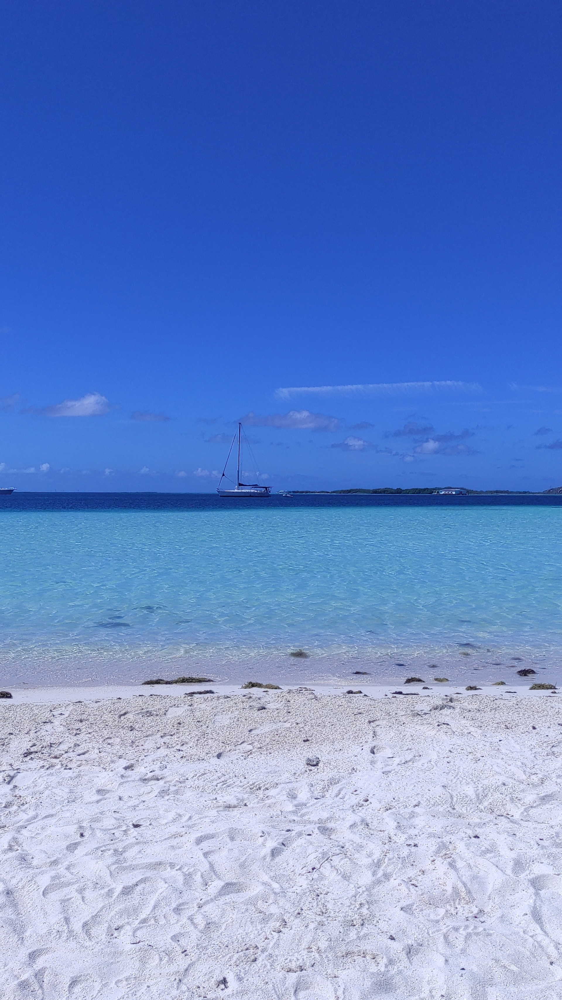
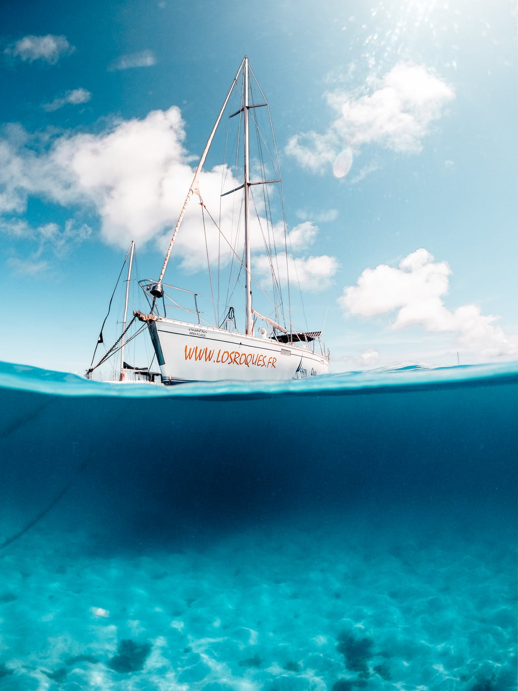

Se puede apreciar una idílica vista de Los Roques. La playa de arena blanca se extiende suavemente
hacia el agua, creando una transición perfecta entre la tierra y el mar. Las aguas cristalinas del
Caribe son de un azul intenso y transparente, revelando el fondo marino repleto de corales y peces
tropicales.

La imagen representa la serenidad y la belleza de Los Roques, donde el velero parece suspendido en un
paraíso de aguas cristalinas y playas de arena blanca. La combinación de la majestuosidad del velero y
la simplicidad de la escena submarina destaca la pureza y la tranquilidad de este lugar paradisíaco.

Esta imagen captura la esencia de Los Roques: un paraíso de playas de ensueño, palmeras y aguas cristalinas, un lugar donde la belleza natural y la tranquilidad se unen para crear un escenario verdaderamente mágico.